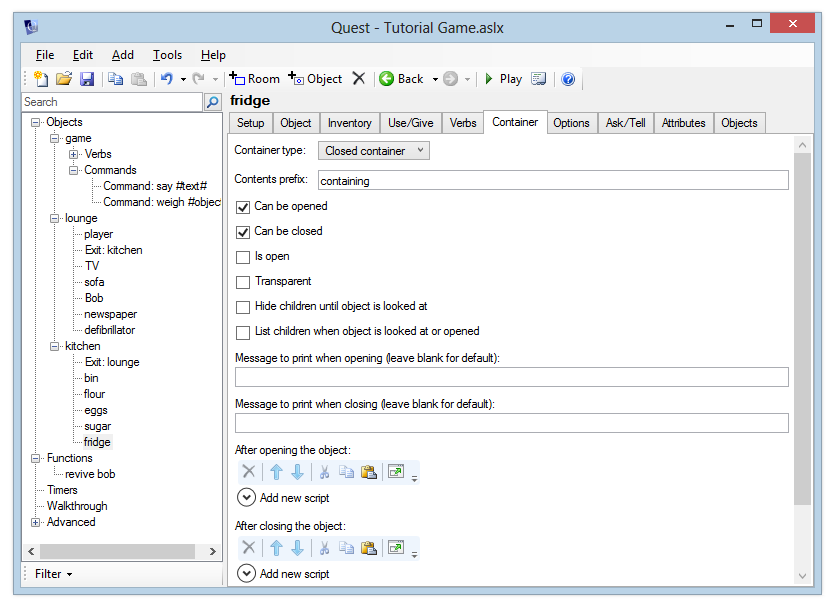
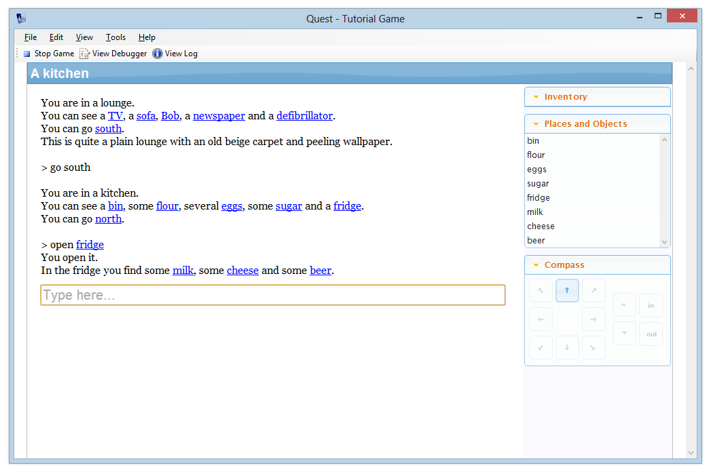
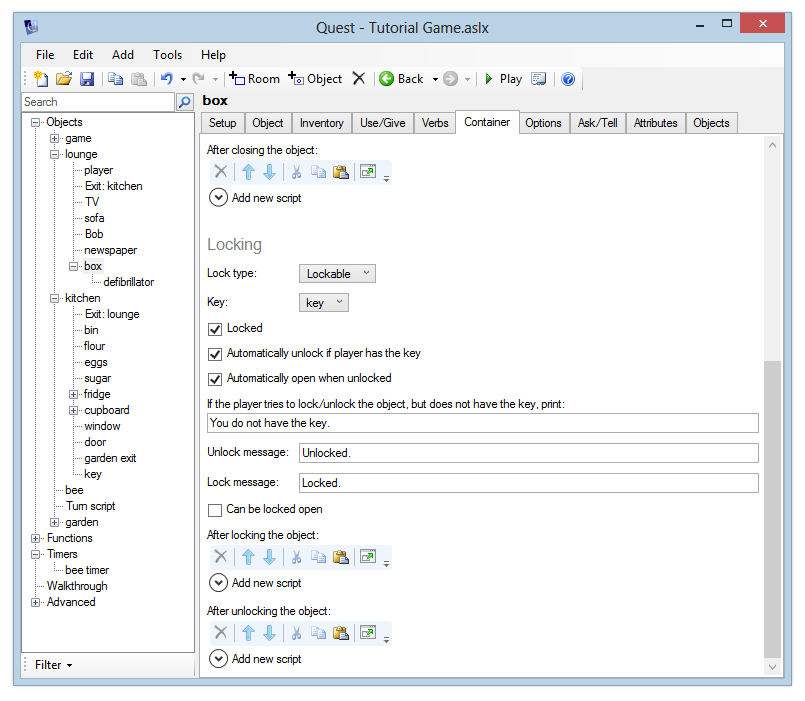

Using containers
Containers are objects that can contain other objects. In this example, we’ll create a “fridge” object in the kitchen, which contains several items of food and drink. The fridge is initially closed, so these items will only be visible once the player has opened the fridge.
Creating the Fridge
Create a “fridge” object in the kitchen and give it a description like “A big old refrigerator sits in the corner, humming quietly.”
Now let’s set the fridge up as a container. This is a feature, so first go to the Features tab, and tick “Container”. Click the Container tab. By default, “Not a container” is selected. Change this to “Closed container”. The Container options will now appear.

By default, the player can open and close the fridge. We’re going to add some objects to the fridge in a moment, and it would be good if the contents were listed when the player opened the fridge, so tick the “List children when object is looked at or opened” option.
Adding objects to the fridge
Now let’s create some objects inside the fridge. To do this, we just create these objects as normal, but on the “Add object” window we set the parent to “fridge”. Alternatively you can move objects. In the desktop version, just drag them around the left pane. For the web version, click on the “Move” button, towards the top right.
Add the following objects: milk, cheese, beer. Give each object a sensible description. The prefix for each object should be “some”, so that the room description sounds natural. Allow each object to be taken.
Now run the game and go to the kitchen. Notice that you can’t see the milk, and if you type something like “look at milk”, Quest will tell you that it’s not here. Now open the fridge, and the objects inside it will be revealed.
By setting the “List prefix” you can change the “It contains” text which appears before the list of objects.

Updating the description
In your “look at” description, you can check if the object is open by running a script. Add an “if” command and choose “object is open” - then you can print a different message depending on whether the fridge is open or closed.
When the fridge is open, you might print “The fridge is open, casting its light out into the gloomy kitchen”. When it is closed, you might print “A big old refrigerator sits in the corner, humming quietly”.
As an exercise, add a closed cupboard to the kitchen. Add a few items to the cupboard such as a tin of beans, a packet of rice etc. The player should be able to open and close the cupboard. When Quest lists the contents of the cupboard, it should say something like “The cupboard is bare except for …”
Transparency
When you set the “Transparent” option, the player can see what objects are inside the container, even if it is closed.
Although the player can see what’s inside a transparent container, they still can’t take objects from it or put objects in it unless it is open.
Surfaces
Surfaces act very much like containers - they act as an always-open container, and objects that are on a surface are visible in a room description even before the player has looked at the surface. For this reason they’re a good choice for implementing things like tables. As an exercise, change the table object in the lounge to make it a surface (or create it if you haven’t already). Then move the newspaper so that it is on the table.
Lockable Containers
What if you don’t want the container to be immediately openable? If it’s part of a puzzle, you may want the player to have a particular “key” object before they can open it. To implement this, you can make the container lockable.
Let’s create a small (and, admittedly, tedious) puzzle - we’re going to put the defibrillator in a locked box. The player must get the key from the kitchen, unlock the box, and then take the defibrillator from the box before they can revive Bob.
Please bear in mind this is probably the most boring puzzle imaginable. It is just an example. Don’t use it as a guide for something that would make your game more exciting - it’s up to you to think of interesting puzzles!
First, set up the objects:
- create a “box” object in the lounge. Make it a closed container.
- move the “defibrillator” object to the box (you can click and drag in the tree in the Windows version, or if you’re using the web version you can select the defibrillator and then click the Move button in the top-right of the screen)
- in the kitchen, add a “key” object, and make it takeable.
Now, make the box lockable. Go to the Container tab and in the “Locking” section, choose “Lockable” from the lock types list. This will display the lock options. You can now choose the “key” object from the list.

By default we have the “Automatically unlock if player has the key” and “Automatically open when unlocked” options turned on. This is out of politeness to players really, as there’s no need to force them to jump through hoops and perform additional steps - if they’ve unlocked the object, it’s a fair bet they want to open it, and if they type “open box” before unlocking it, then if they have the key, there’s no point in forcing them to type “unlock box” first.
It might be a good idea to tick the “List children when object is looked at or opened” option, in the main Container options. Now your game output will look like something this:
> open box
It is locked.
> unlock box
You do not have the key.
> s
You are in a kitchen.
[rest of kitchen description snipped...]
> take key
You pick it up.
> n
You are in a lounge.
[rest of lounge description snipped...]
> unlock box
Unlocked.
You open it.
It contains a defibrillator.
Next: Moving objects during the game